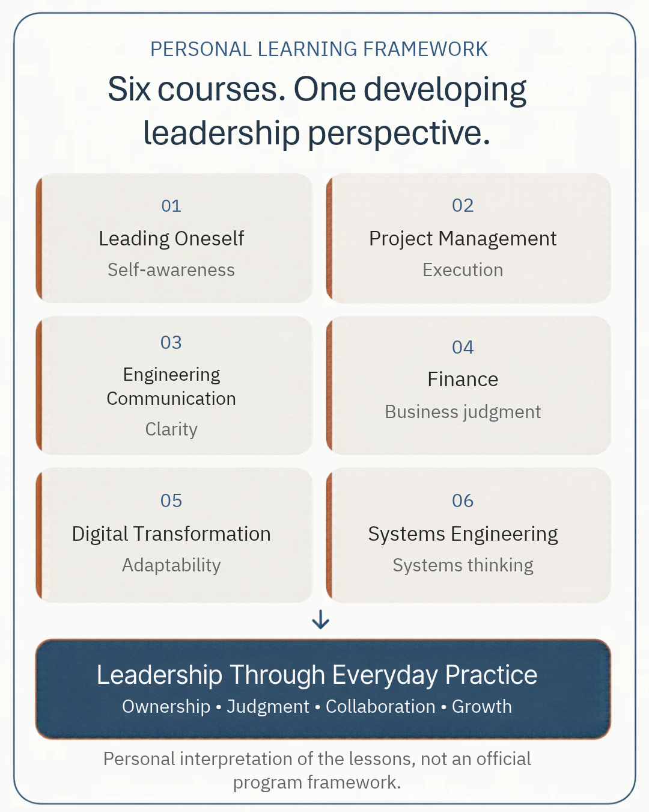

When I started my master's in Engineering Management through the Lockheed Engineering Management Program at CU Boulder,
I expected to learn how to lead engineering projects and teams. What I didn't expect was how much the experience would challenge the way I think about leadership itself.
I'm not managing a team today, but I've come to realize that leadership rarely starts with a title. It starts with how you manage yourself, communicate, make decisions,
and show up when problems need to be solved. Going through the program, I've found myself applying lessons far beyond the classroom. They influence how I approach work,
personal goals, and how I think about the kind of leader I want to become.
Here are six lessons that stood out so far.
1. Leading Oneself: Leadership Starts With You
One of the first courses in the program was Leading Oneself, and looking back, it was the perfect starting point.
The lesson was simple: before you can lead others, you need to learn how to lead yourself.
Most of us think of leadership as managing people, setting direction, or making big decisions.
But this course challenged me to think about leadership in a more personal way.
How do I respond to challenges? How do I handle feedback? Am I disciplined enough to follow through on the goals
I set for myself? I've started paying more attention to these questions, both at work and in my personal life. As an engineer, it's easy
to focus on getting the job done. But I'm learning that how I approach the work matters just as much as the outcome.
My takeaway: Leadership doesn't start with a title.
It starts with personal responsibility, self-awareness, and the choices we make every day.
2. Project Management: Your Life Is a Project Too
One of my favorite ways to think about Project Management is to apply it to life.
Think of your life as a project, with you as its project manager in charge of your own development.
You have objectives, timelines, resources, competing priorities, and milestones.
And just like any engineering project, things don't always go according to plan and you need to adjust.
The course encouraged me to think more carefully about how objectives are translated into plans and how progress is monitored
along the way. At work, this translates into being more intentional about defining deliverables, understanding dependencies,
communicating progress, and recognizing risks before they become larger problems.
Personally, I have been applying this way of thinking to how I approach my education,
career development, and long-term goals.
One lesson I continue to appreciate is that having a goal is not the same as having a plan to achieve it
and even a good plan needs to adapt when conditions change.
3. Engineering Communication: Good Ideas Need to Be Understood
You can have the best technical idea in the room, but if you cannot communicate it effectively,
its value may never be realized. That is because having a technically sound idea is only part
of the challenge. Communicating it clearly is just as important.
As engineers, we spend a lot of time analyzing problems, weighing options, and developing
recommendations. But all of that work has limited impact if the people making decisions can't
follow the reasoning behind it.
I've come to learn that communication isn't one-size-fits-all. The level of detail that helps
another engineer may not be what a production manager, accounting manger or executive needs.
The underlying engineering shouldn't change, but how we communicate it often needs to. Today,
I think intentionally about 3 things; audience, purpose, and infomation needed to make a decision.
Clear communication isn't about making engineering sound impressive. It is about making the thinking
understandable and useful. That is a skill I expect to keep developing throughout my career.
4. Finance for Engineering Mangers: Understanding the Business Side
As engineers, we often focus on whether something works, whether it improves a process, or whether it solves a technical problem.
But organizations also need to understand whether an investment makes financial sense, what alternatives exist
and how resources should be allocated. Hence, a technically impressive solution is not automatically the best business decision
The financial implications of engineering decisions, including the costs, benefits, risks, and long-term value of different alternatives.
As such good engineering judgment includes understanding the business consequences of technical decisions.
Beyond work, I started reflecting my own life through a similar lens:
Am I managing my resources intentionally? Am I making decisions that support my long-term goals? Am I preparing financially
for the future I want? Of course, personal success cannot be reduced to a financial statement. But the underlying
principle of being responsible with resources is just as important.
5. Digital Transformation: Technology Is Only Part of the Story
Digital Transformation has been especially relevant to my interests and the work I am involved in.
We are experiencing rapid changes in technology, from industrial connectivity and analytics to automation and
artificial intelligence. But introducing new technology is not the same as improving the system. One of the questions I keep going back to
is: How can technology help people and organizations learn, adapt, and improve rather than just digitize what they already do?
Through exposure in digital transformation initiatives, I've become increasingly interested in the relationship between
technology, people, and systems connecting them. The technology matters, but so do the processes, culture, and behaviors surrounding it.
The same applies to personal development. New tools can be powerful, but their value depends on how we use them to learn, solve problems,
communicate, and build new capabilities.
Technology will continue to change but I think the real skill is learning how to evaluate, adapt, and make meaningful use of those changes.
6. Systems Engineering: You're Part Of Something Bigger
One lesson from Systems Engineering that has stayed with me is that nothing operates entirely in isolation.
A machine is part of a production line. A production line is part of a factory. That factory depends on people, information, materials, suppliers,
and decisions made throughout the organization. Improving one part doesn't always improve the performance of the whole. This has encouraged me to
look beyond the immediate problems and consider how decisions affect other functions, processes, and people.
The lesson extends beyond engineering. We are all part of larger systems: teams, organizations, communities, and professional networks.
Which pushes me to ask How do I contribute value to the larger system, rather than focus only on my individual responsibilities?
So far, this is one of the clearest connections between systems thinking and leadership.
The Connection: Leadership Doesn't Require a Specific Title
What I appreciate most about these courses is how they connect.
- Leading oneself develops the personal discipline and awareness needed to take responsibility.
- Project Management helps turn goals into structured plans.
- Engineering Communication helps make ideas useful to others.
- Finance introduces the business implications of decisions.
- Digital Transformation challenges us to adapt and rethink how systems work.
- Systems Engineering reminds us to consider the whole, not individual parts.

These haven't felt like boxes to check on the way to a degree. They are influencing how I approach work and professional development. I'm realizing that leadership doesn't always mean directing a team or having authority over others. It is also about taking ownership, communicating clearly, asking better questions, following through on commitments, and helping others succeed. I still have much to learn about leading teams, but these are leadership habits that I can practice right now.
The Journey Continues
I am still working through the program, and there is plenty more to learn in class and on the production floor.
So far, one of its greatest benefits has been how it has challenged me to connect different disciplines and rethink
some of my existing approaches.
What started as an opportunity to prepare for future management responsibilities has also become an opportunity
to grow as an engineer, individual contributor, and person.
I am beginning to see connections between leadership, communication, financial thinking, tech, and systems that
I might not have appreciated as clearly before. And perhaps that is what I am enjoying most about the experience.
I'm looking forward to the rest of the program, the perspectives I have yet to encounter, and the ways those experiences
may continue to challenge my thinking.
One lesson stands out so far:
You don't have to be a manager to begin practicing leadership.